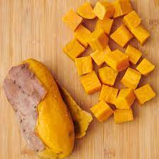

SWEET POTATOES
Hi, I'm Khushi
I'm glad you are here, thankyou for joining me!
About the dish
It's a savory and flavorful chaat usually served warm/hot, which also happens to be a very popular street food of india.

Ingredients
- sweet potatoes - it's upto you
- chat masala - a pinch
- lemon - half
- oil/butter - 1-2 tbspn.
Directions
- Turn on gas & keep a pan on it.
- While the gas is on low flame, wash sweet potatoes & dry it with cotton cloth.
- Grease the pan & sweet potatoes with oil/butter
- Once the pan is hot, place the sweet potatoes on it & cover it with a lid.
- After 4-5 minutes, open the lid.
- Try to insert a fork in the part where it was being cooked.
- If it goes easily, turn the potato or else continue cooking on the same part and make sure to cover it with the lid.
- Repeat the same process till sweet potatoes are boiled perfectly.
- After being boiled perfectly from all sides and turn the gas off.
- Once it cools down abit, start removing the skin.
- Cut the boiled Sweet potatoes into small pieces.
- You can eat it as it is or can add chat masala & squeeze 4-5 drops of lemon on it.
- Enjoy!
you can find my other receipes at Khushi's Kitchen Creations